Last updated: 2025-02-19
Checks: 7 0
Knit directory: oae_ccs_roms/
This reproducible R Markdown analysis was created with workflowr (version 1.7.1). The Checks tab describes the reproducibility checks that were applied when the results were created. The Past versions tab lists the development history.
Great! Since the R Markdown file has been committed to the Git repository, you know the exact version of the code that produced these results.
Great job! The global environment was empty. Objects defined in the global environment can affect the analysis in your R Markdown file in unknown ways. For reproduciblity it’s best to always run the code in an empty environment.
The command set.seed(20240919) was run prior to running
the code in the R Markdown file. Setting a seed ensures that any results
that rely on randomness, e.g. subsampling or permutations, are
reproducible.
Great job! Recording the operating system, R version, and package versions is critical for reproducibility.
Nice! There were no cached chunks for this analysis, so you can be confident that you successfully produced the results during this run.
Great job! Using relative paths to the files within your workflowr project makes it easier to run your code on other machines.
Great! You are using Git for version control. Tracking code development and connecting the code version to the results is critical for reproducibility.
The results in this page were generated with repository version a36bcfe. See the Past versions tab to see a history of the changes made to the R Markdown and HTML files.
Note that you need to be careful to ensure that all relevant files for
the analysis have been committed to Git prior to generating the results
(you can use wflow_publish or
wflow_git_commit). workflowr only checks the R Markdown
file, but you know if there are other scripts or data files that it
depends on. Below is the status of the Git repository when the results
were generated:
Ignored files:
Ignored: .Rhistory
Ignored: .Rproj.user/
Untracked files:
Untracked: code/oggrid_surface_data.R
Untracked: code/regrid_surface_data.R
Unstaged changes:
Modified: analysis/_site.yml
Modified: code/Workflowr_project_managment.R
Modified: code/dTA_dDIC.R
Modified: code/regrid_cdr_eff_molar.R
Modified: code/regrid_dTA_dDIC.R
Note that any generated files, e.g. HTML, png, CSS, etc., are not included in this status report because it is ok for generated content to have uncommitted changes.
These are the previous versions of the repository in which changes were
made to the R Markdown (analysis/drivers_fgCO2.Rmd) and
HTML (docs/drivers_fgCO2.html) files. If you’ve configured
a remote Git repository (see ?wflow_git_remote), click on
the hyperlinks in the table below to view the files as they were in that
past version.
| File | Version | Author | Date | Message |
|---|---|---|---|---|
| Rmd | a36bcfe | vgfroh | 2025-02-19 | Mixing depth and air-sea co2 flux anlaysis |
#loading packages
library(tidyverse)
library(tidync)
library(data.table)
library(arrow)
library(scales)
# Path to intermediate computation outputs
path_outputs <- "/net/sea/work/vifroh/oae_ccs_roms_data/regrid_2/"
# Path to original grid intermediate computation outputs
path_outputs_og <- "/net/sea/work/vifroh/oae_ccs_roms_data/original_grid/"
# Path to save practice plots when working on them
path_plots <- "/net/sea/work/vifroh/test_plots/"
# loading in previous saved surface variable data
lanina_surf_data <- read_feather(
paste0(path_outputs, "lanina_surf_dataRG2.feather"))
neutral_surf_data <- read_feather(
paste0(path_outputs, "neutral_surf_dataRG2.feather"))
elnino_surf_data <- read_feather(
paste0(path_outputs, "elnino_surf_dataRG2.feather"))
# loading in previous saved data with area
lanina_dTA_mol <- read_feather(
paste0(path_outputs,"lanina_dTA_mol_mdataRG2.feather"))
# loading in original grid integrated CDR data
lanina_cdreff_sum <- read_feather(
paste0(path_outputs_og, "lanina_CDReff_integrated.feather"))
neutral_cdreff_sum <- read_feather(
paste0(path_outputs_og, "neutral_CDReff_integrated.feather"))
elnino_cdreff_sum <- read_feather(
paste0(path_outputs_og, "elnino_CDReff_integrated.feather"))phase_data <- list(lanina_surf_data, neutral_surf_data, elnino_surf_data)
# Convert lat/lon to numeric and subset first two years
phase_data <- phase_data %>%
lapply(function(table) {
setDT(table)
setorder(table, time)
table[, lat := as.numeric(lat)]
table[, lon := as.numeric(lon)]
table[, month := .GRP, by = time] # gives index in order to each unique time
table <- table[month <= 24] # subsets to first two years
return(table)
})
# return tables to each item
lanina_surf_data <- phase_data[[1]]
neutral_surf_data <- phase_data[[2]]
elnino_surf_data <- phase_data[[3]]
# plotting names for later
phase_titles <- c("La Niña", "Neutral", "El Niño")
phases <- c("lanina", "neutral", "elnino")
# adding phase and combining all 3 into one table for plotting
phase_list <- Map(function(table, phase) {
table[, phase := phase]
}, phase_data, phases)
surface_data <- rbindlist(phase_list)
# subset down to just area data; figure out how to subset just the unique?
setDT(lanina_dTA_mol)
lanina_dTA_mol <- unique(lanina_dTA_mol[, .(lat, lon, area)])
# create combined table of original grid data with "phase" column
full_cdreff_og <- rbindlist(
list(lanina = lanina_cdreff_sum, neutral = neutral_cdreff_sum,
elnino = elnino_cdreff_sum),
idcol = "phase")
# add column for months since oae addition begins for x-axis
full_cdreff_og <- full_cdreff_og[, month := seq_len(.N), by = phase]
rm(elnino_cdreff_sum, lanina_cdreff_sum, neutral_cdreff_sum)
gc() used (Mb) gc trigger (Mb) max used (Mb)
Ncells 1476560 78.9 2653632 141.8 2152044 115
Vcells 211057487 1610.3 7913308978 60373.8 9637973949 73532Regional distribution of flux in OAE runs
# can rerun code for months of choice
create_fgOAE_distmap <- function(phase_name, title_text) {
phase_dt <- surface_data[surface_data$phase == phase_name & surface_data$month == 14]
plot <- ggplot(phase_dt, aes(x = lon, y = lat, fill = FG_CO2_OAE)) +
geom_polygon(data = map_data("world"), aes(x = long, y = lat, group = group),
fill = "lightgray", color = "white") +
geom_raster() +
scale_fill_distiller(limit = c(-0.0055, 0.0055), palette = "PRGn") + # set the color range
theme_light() +
coord_fixed(xlim = c(-170, -85),
ylim = c(10, 60)) +
scale_x_continuous(breaks = seq(-170, -85, by = 10)) +
scale_y_continuous(breaks = seq(10, 60, by = 10)) +
labs(x = "Longitude",
y = "Latitude",
fill = "Air-Sea CO2 Flux (mmol/m^2/s)",
title = paste0(title_text, " Phase, Air-Sea CO2 Flux (Month 14)")) +
theme(panel.border = element_blank())
print(plot)
# # save plot
# ggsave(paste0(path_plots, phase_name, "_fgOAEmap_month14.png"), plot = plot,
# width = 8, height = 6, dpi = 300)
}
lapply(seq_along(phases), function(i) {
create_fgOAE_distmap(phases[i], phase_titles[i])
})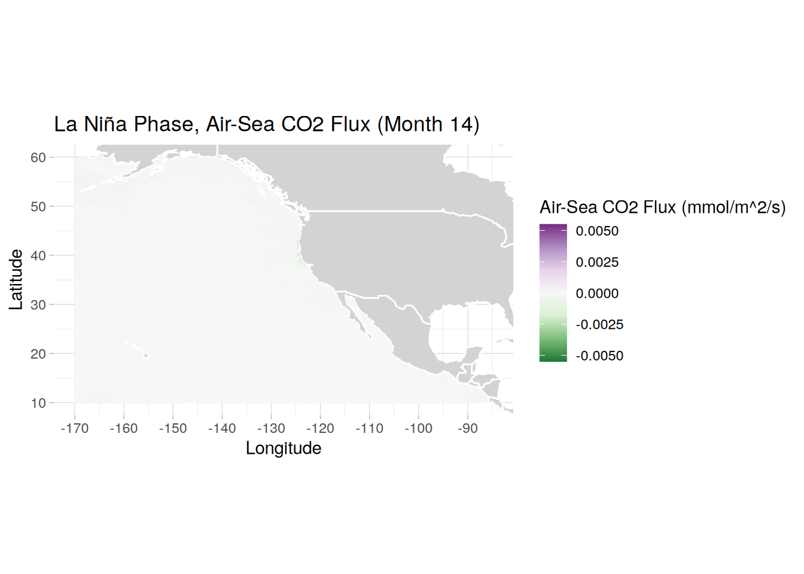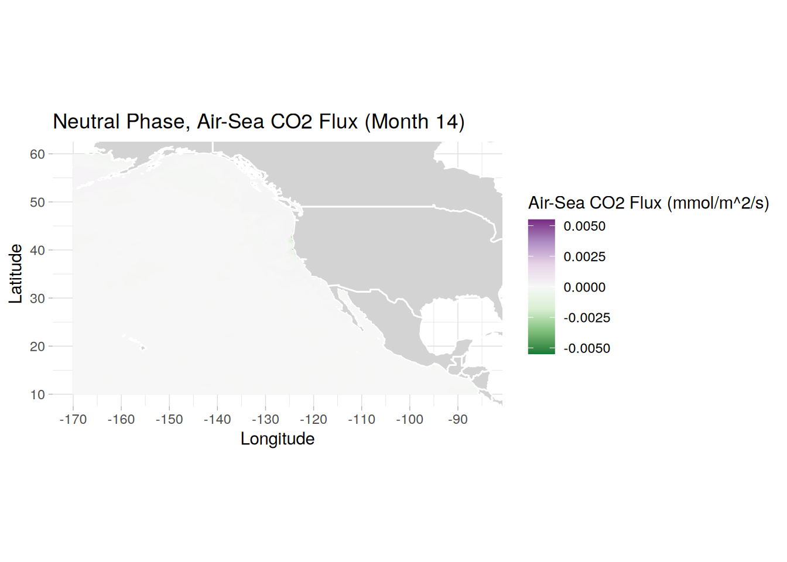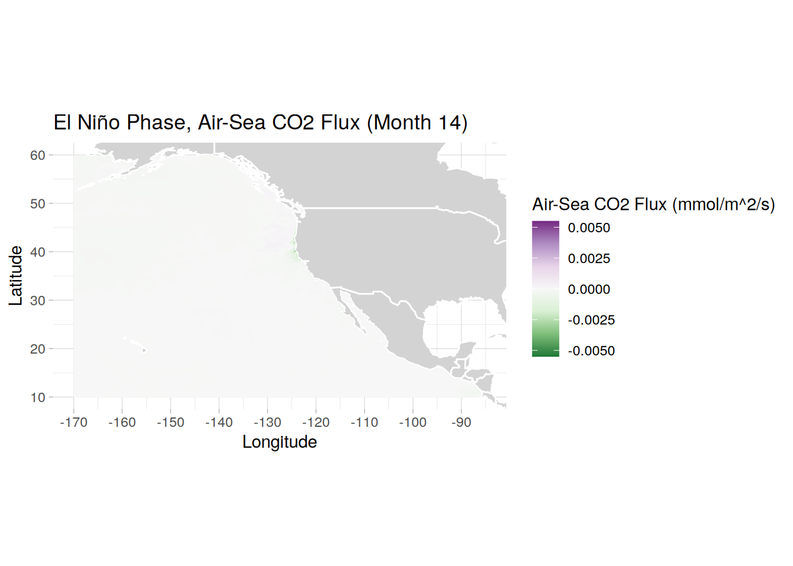
[[1]]
[[2]]
[[3]]rm(create_fgOAE_distmap, phase_data, phase_list)
gc() used (Mb) gc trigger (Mb) max used (Mb)
Ncells 1720913 92.0 2653632 141.8 2653632 141.8
Vcells 220447425 1681.9 6330647183 48299.1 9637973949 73532.0Regional distribution of dflux in OAE runs (OAE flux - control flux)
# can rerun code for months of choice,
create_dfg_distmap <- function(phase_name, title_text) {
phase_dt <- surface_data[surface_data$phase == phase_name & surface_data$month == 22]
plot <- ggplot(phase_dt, aes(x = lon, y = lat, fill = dFG)) +
geom_polygon(data = map_data("world"), aes(x = long, y = lat, group = group),
fill = "lightgray", color = "white") +
geom_raster() +
# scale_fill_viridis_c(limit = c(0, 0.00022)) +
scale_fill_gradient2(low = "green", mid = "white", high = "purple", midpoint = 0,
limit = c(0, 0.00022)) +
theme_light() +
coord_fixed(xlim = c(-170, -85),
ylim = c(10, 60)) +
scale_x_continuous(breaks = seq(-170, -90, by = 10)) +
scale_y_continuous(breaks = seq(10, 60, by = 10)) +
labs(x = "Longitude",
y = "Latitude",
fill = "dCO2 Flux
(mmol/m^2/s)",
title = paste0(title_text, " Phase, Change in Air-Sea CO2 Flux (Month 22)")) +
theme(panel.border = element_blank())
print(plot)
# # save plot
# ggsave(paste0(path_plots, phase_name, "_dfgmap_month22.png"), plot = plot,
# width = 8, height = 6, dpi = 300)
}
lapply(seq_along(phases), function(i) {
create_dfg_distmap(phases[i], phase_titles[i])
})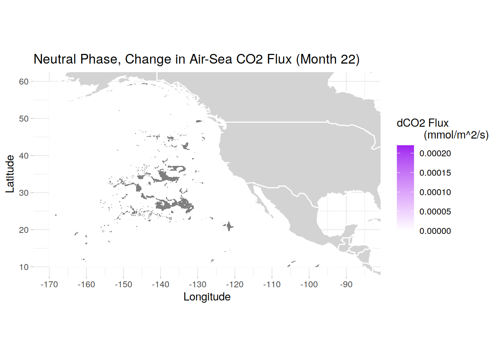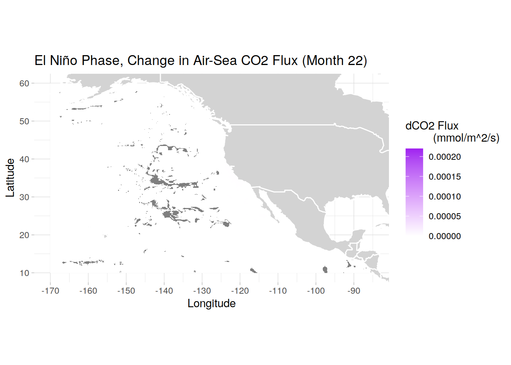
[[1]]
[[2]]
[[3]]rm(create_dfg_distmap)
gc() used (Mb) gc trigger (Mb) max used (Mb)
Ncells 1726801 92.3 2653632 141.8 2653632 141.8
Vcells 220463668 1682.1 5064517747 38639.3 9637973949 73532.0Zoomed in maps of dflux in OAE runs (OAE flux - control flux) near add site
# can rerun code for months of choice
create_dfg_distmap <- function(phase_name, title_text) {
phase_dt <- surface_data[surface_data$phase == phase_name & surface_data$month == 15]
plot <- ggplot(phase_dt, aes(x = lon, y = lat, fill = dFG)) +
geom_polygon(data = map_data("world"), aes(x = long, y = lat, group = group),
fill = "lightgray", color = "white") +
geom_raster() +
# scale_fill_viridis_c(limit = c(0, 0.00022)) +
scale_fill_gradient2(low = "green", mid = "white", high = "purple", midpoint = 0,
limit = c(0, 0.0000575)) +
theme_light() +
coord_fixed(xlim = c(-135, -100),
ylim = c(10, 45)) +
scale_x_continuous(breaks = seq(-135, -100, by = 10)) +
scale_y_continuous(breaks = seq(10, 45, by = 10)) +
labs(x = "Longitude",
y = "Latitude",
fill = "dCO2 Flux
(mmol/m^2/s)",
title = paste0(title_text, " Phase, Change in Air-Sea CO2 Flux (Month 15)")) +
theme(panel.border = element_blank())
print(plot)
# # save plot
# ggsave(paste0(path_plots, phase_name, "_dfgmapzoom_month15.png"), plot = plot,
# width = 8, height = 6, dpi = 300)
}
lapply(seq_along(phases), function(i) {
create_dfg_distmap(phases[i], phase_titles[i])
})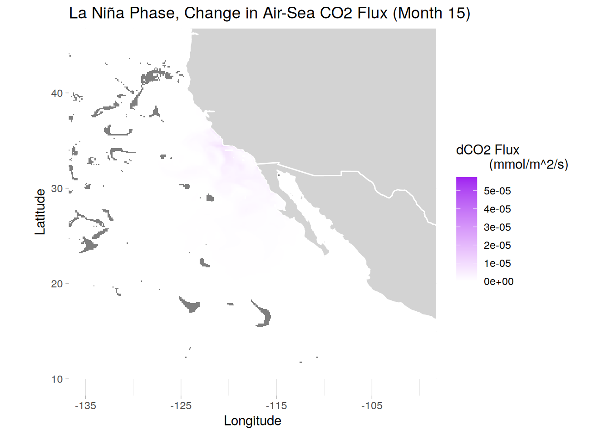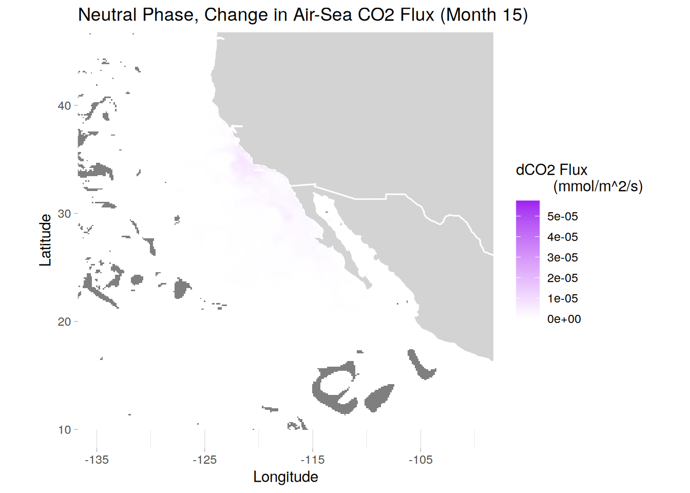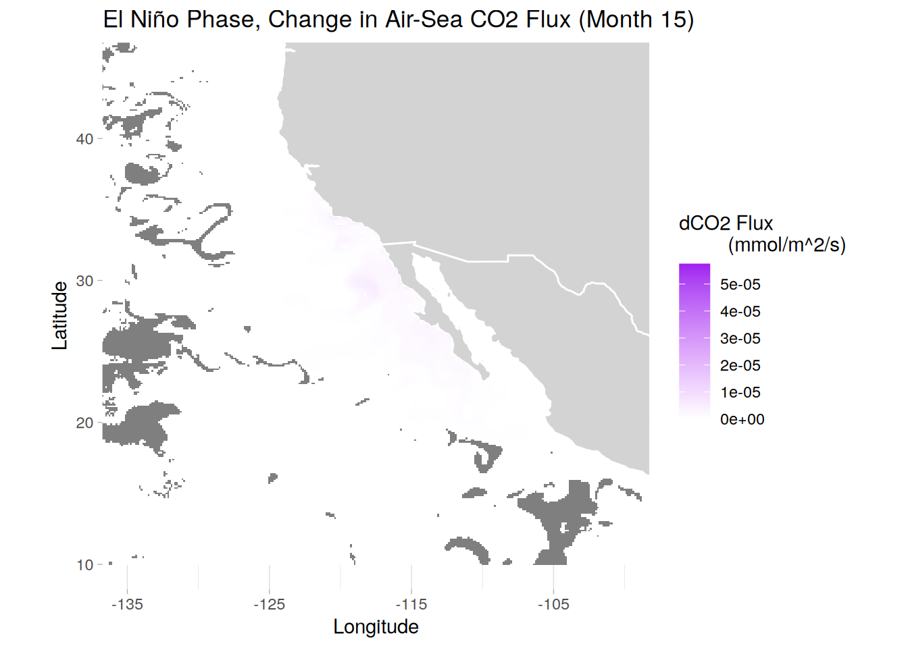
[[1]]
[[2]]
[[3]]rm(create_fgd_distmap)Warning in rm(create_fgd_distmap): object 'create_fgd_distmap' not foundgc() used (Mb) gc trigger (Mb) max used (Mb)
Ncells 1724859 92.2 2653632 141.8 2653632 141.8
Vcells 220457508 1682.0 4051614198 30911.4 9637973949 73532.0# calculating mean max mixing depth across all 3 phases for each grid cell
surface_data[, ":=" (
dFG_mean = mean(dFG, na.rm = TRUE)
), by = .(lat, lon, month)]
# can rerun code for months of choice, subset coordinates in place
create_dfg_meanmap <- function(phase_name, title_text) {
phase_dt <- surface_data[surface_data$phase == phase_name & surface_data$month == 1]
plot <- ggplot(phase_dt, aes(x = lon, y = lat, fill = dFG - dFG_mean)) +
geom_polygon(data = map_data("world"), aes(x = long, y = lat, group = group),
fill = "lightgray", color = "white") +
geom_raster() +
scale_fill_gradient2(low = "blue", mid = "white", high = "red", midpoint = 0,
limits = c(-0.00005, 0.00005)) +
# breaks = c(-0.000005, -0.0000025, 0, 0.0000025, 0.000005)) +
theme_light() +
coord_fixed(xlim = c(-135, -100),
ylim = c(10, 45)) +
scale_x_continuous(breaks = seq(-135, -100, by = 10)) +
scale_y_continuous(breaks = seq(10, 45, by = 10)) +
labs(x = "Longitude",
y = "Latitude",
fill = "Difference from Mean dCO2 Flux
(mmol/m^2/s)",
title = paste0(title_text, " Phase, Difference from Mean delta Air-Sea CO2 Flux (Month 1)")) +
theme(panel.border = element_blank())
print(plot)
# # save plot
# ggsave(paste0(path_plots, phase_name, "_dfgmapdfm_month1.png"), plot = plot,
# width = 8, height = 6, dpi = 300)
}
lapply(seq_along(phases), function(i) {
create_dfg_meanmap(phases[i], phase_titles[i])
})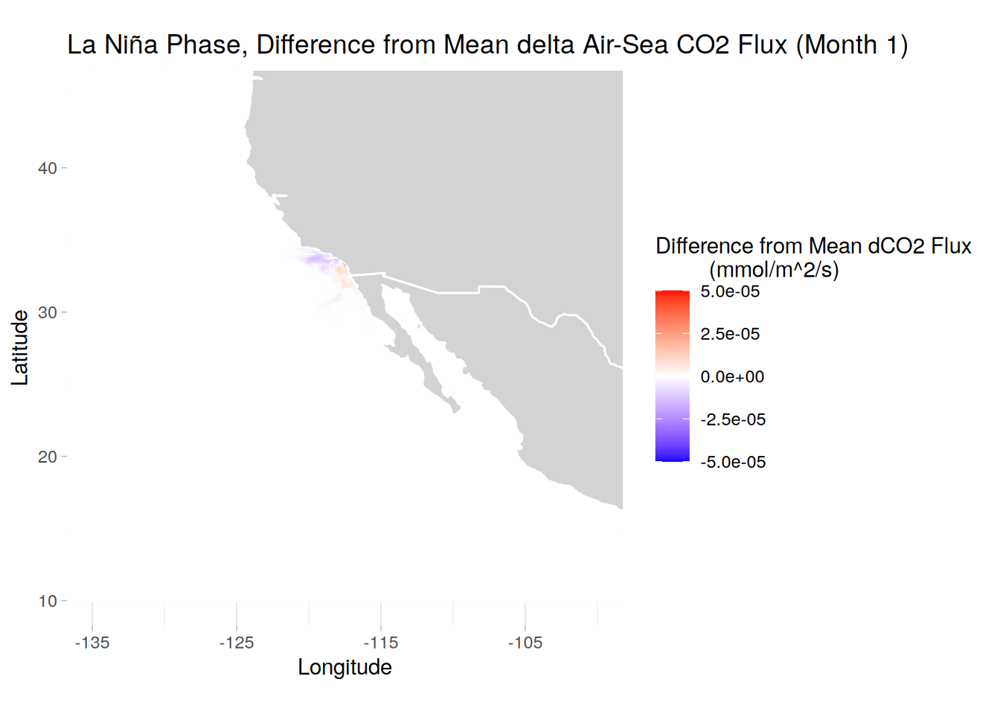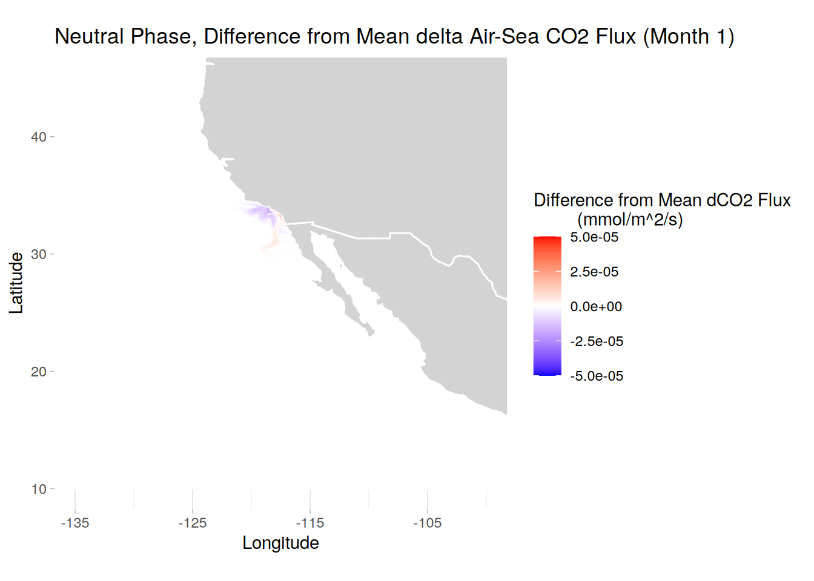
[[1]]
[[2]]
[[3]]rm(create_dfg_meanmap)
gc() used (Mb) gc trigger (Mb) max used (Mb)
Ncells 1726113 92.2 2653632 141.8 2653632 141.8
Vcells 232865432 1776.7 3241291359 24729.1 9637973949 73532.0# merging area data to dFG and calculating moles per month from the dFG rate
uptake_data <- surface_data[, .SD, .SDcols = c("lat", "lon", "time", "dFG",
"month", "phase")] %>%
merge(lanina_dTA_mol, by = c("lon", "lat"), all.x = TRUE)
uptake_data[, secs := as.numeric(days_in_month(ymd(paste0(time, "-01"))))
* 60 * 60 * 24] # pulls days in the month and converts to seconds
uptake_data[, CO2_uptake := dFG * area * secs / 1000] # mmol/m2/s -> moles
# can rerun code for months of choice, using zoomed region
create_uptake_distmap <- function(phase_name, title_text) {
phase_dt <- uptake_data[uptake_data$phase == phase_name & uptake_data$month == 24]
plot <- ggplot(phase_dt, aes(x = lon, y = lat, fill = CO2_uptake)) +
geom_polygon(data = map_data("world"), aes(x = long, y = lat, group = group),
fill = "lightgray", color = "white") +
geom_raster() +
# scale_fill_viridis_c(limit = c(0, 91000000)) +
scale_fill_gradient2(low = "green", mid = "white", high = "purple", midpoint = 0,
limit = c(0, 1500000)) +
theme_light() +
coord_fixed(xlim = c(-135, -100),
ylim = c(10, 45)) +
scale_x_continuous(breaks = seq(-135, -100, by = 10)) +
scale_y_continuous(breaks = seq(10, 45, by = 10)) +
labs(x = "Longitude",
y = "Latitude",
fill = "CO2 Uptake (moles)",
title = paste0(title_text, " Phase, CO2 Uptake (Month 24)")) +
theme(panel.border = element_blank())
print(plot)
# # save plot
# ggsave(paste0(path_plots, phase_name, "_co2uptakemap_month24.png"), plot = plot,
# width = 8, height = 6, dpi = 300)
}
lapply(seq_along(phases), function(i) {
create_uptake_distmap(phases[i], phase_titles[i])
})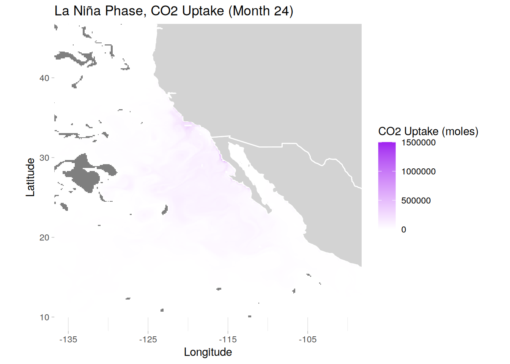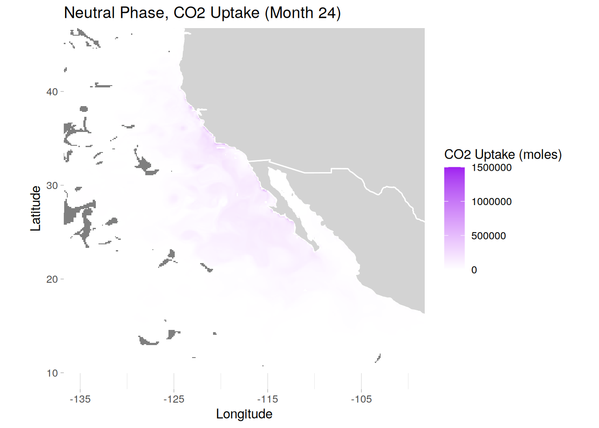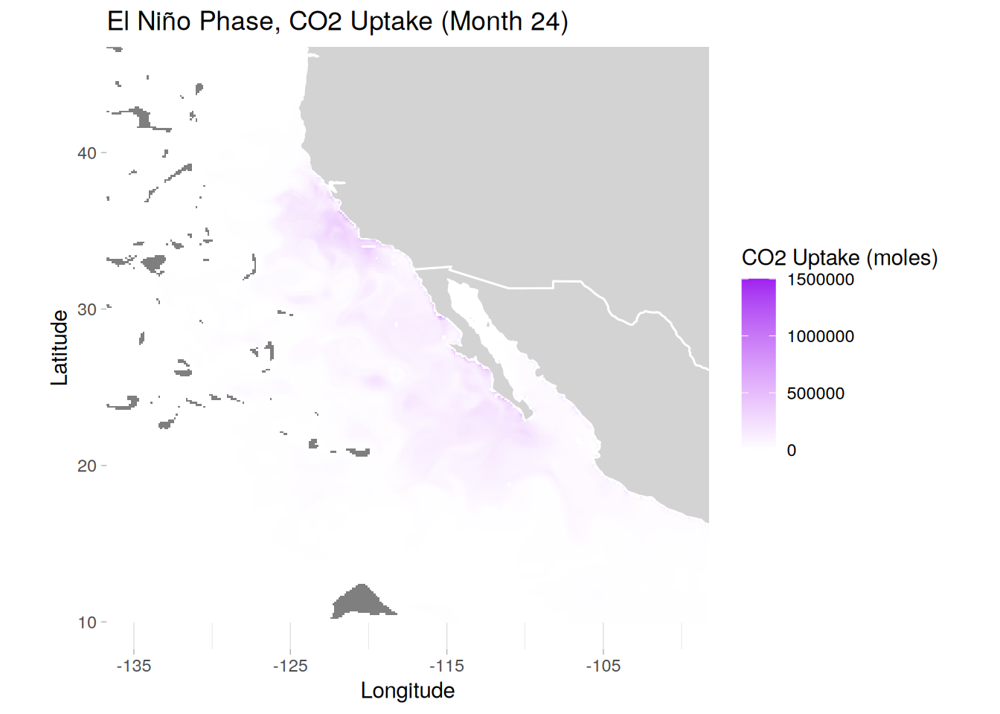
[[1]]
[[2]]
[[3]]# integrate by time and compare it to the native grid dDIC to check scope
# # need to add these up sequentially
uptake_data_int <- uptake_data[, .(CO2_sum_ind = sum(CO2_uptake, na.rm = TRUE)),
by = .(phase, month)] %>%
.[, CO2_sum_cum := cumsum(CO2_sum_ind), by = phase]
uptake_data_int <- merge(uptake_data_int, full_cdreff_og[, .(phase, month, dDIC_sum)],
by = c("phase", "month"), all.x = TRUE) %>%
.[, fraction := CO2_sum_cum / dDIC_sum]
# saving uptake individual and sum value tables
write_feather(uptake_data, paste0(path_outputs,
"fguptake_data.feather"))
write_feather(uptake_data_int, paste0(path_outputs,
"fguptake_data_intsum.feather"))
# plot time series of accumulating uptaken CO2
ggplot(uptake_data_int, aes(x = month, y = CO2_sum_cum/1e10, color = phase)) +
scale_x_continuous(breaks = seq(0, 24, by = 3), limits = c(0,24),
expand = c(0,0)) +
scale_y_continuous(limits = c(0, 18), expand = c(0,0)) +
geom_vline(xintercept = seq(0, 24, by = 12), color = "grey75", linewidth = 0.4) +
geom_hline(yintercept = 16.7, linetype = "dashed", color = "black", linewidth = 0.6) +
geom_line(linewidth = 1) +
labs(title = "Cumulative Uptaken CO2 from Surface Flux Values",
x = "Months Since OAE Began",
y = "Moles of CO2 (10^10)") +
theme_bw()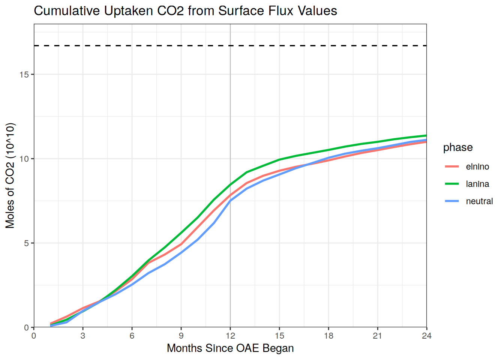
# ggsave(paste0(path_plots, "total_fg_co2uptake.png"), plot = last_plot(),
# width = 10, height = 6, dpi = 300)
rm(list = ls())
gc() used (Mb) gc trigger (Mb) max used (Mb)
Ncells 1800256 96.2 3224358 172.2 2653632 141.8
Vcells 10077938 76.9 2593033088 19783.3 9637973949 73532.0
sessionInfo()R version 4.4.2 (2024-10-31)
Platform: x86_64-pc-linux-gnu
Running under: openSUSE Leap 15.6
Matrix products: default
BLAS/LAPACK: /usr/local/OpenBLAS-0.3.28/lib/libopenblas_haswellp-r0.3.28.so; LAPACK version 3.12.0
locale:
[1] LC_CTYPE=en_US.UTF-8 LC_NUMERIC=C
[3] LC_TIME=en_US.UTF-8 LC_COLLATE=en_US.UTF-8
[5] LC_MONETARY=en_US.UTF-8 LC_MESSAGES=en_US.UTF-8
[7] LC_PAPER=en_US.UTF-8 LC_NAME=C
[9] LC_ADDRESS=C LC_TELEPHONE=C
[11] LC_MEASUREMENT=en_US.UTF-8 LC_IDENTIFICATION=C
time zone: Europe/Zurich
tzcode source: system (glibc)
attached base packages:
[1] stats graphics grDevices utils datasets methods base
other attached packages:
[1] scales_1.3.0 arrow_18.1.0.1 data.table_1.16.2 tidync_0.4.0
[5] lubridate_1.9.3 forcats_1.0.0 stringr_1.5.1 dplyr_1.1.4
[9] purrr_1.0.2 readr_2.1.5 tidyr_1.3.1 tibble_3.2.1
[13] ggplot2_3.5.1 tidyverse_2.0.0 workflowr_1.7.1
loaded via a namespace (and not attached):
[1] gtable_0.3.6 xfun_0.49 bslib_0.8.0 processx_3.8.4
[5] callr_3.7.6 tzdb_0.4.0 vctrs_0.6.5 tools_4.4.2
[9] ps_1.8.1 generics_0.1.3 fansi_1.0.6 pkgconfig_2.0.3
[13] RColorBrewer_1.1-3 assertthat_0.2.1 lifecycle_1.0.4 farver_2.1.2
[17] compiler_4.4.2 git2r_0.35.0 munsell_0.5.1 getPass_0.2-4
[21] ncdf4_1.23 httpuv_1.6.15 htmltools_0.5.8.1 maps_3.4.2.1
[25] sass_0.4.9 yaml_2.3.10 later_1.4.1 pillar_1.9.0
[29] jquerylib_0.1.4 whisker_0.4.1 cachem_1.1.0 RNetCDF_2.9-2
[33] ncmeta_0.4.0 tidyselect_1.2.1 digest_0.6.37 stringi_1.8.4
[37] labeling_0.4.3 rprojroot_2.0.4 fastmap_1.2.0 grid_4.4.2
[41] colorspace_2.1-1 cli_3.6.3 magrittr_2.0.3 utf8_1.2.4
[45] withr_3.0.2 promises_1.3.2 bit64_4.5.2 timechange_0.3.0
[49] rmarkdown_2.29 httr_1.4.7 bit_4.5.0 hms_1.1.3
[53] evaluate_1.0.1 knitr_1.49 rlang_1.1.4 Rcpp_1.0.13-1
[57] glue_1.8.0 rstudioapi_0.17.1 jsonlite_1.8.9 R6_2.5.1
[61] fs_1.6.5